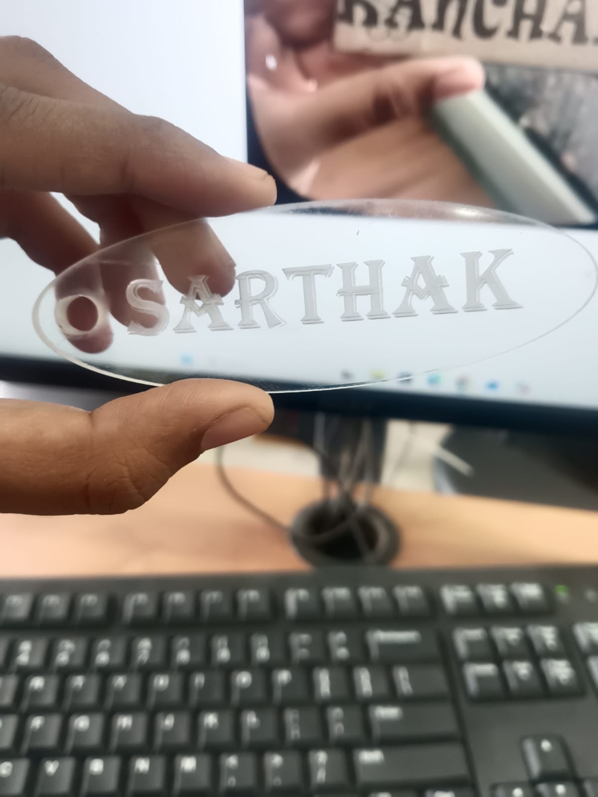

Manufacturing Processes
3D Printing
3D printing is an additive manufacturing process in which components are produced layer by layer from a digital CAD model. It helps manufacture customized parts and supports rapid prototyping.



Laser Cutting
Laser cutting uses a focused laser beam to cut material according to a digital design. It provides accurate profiles, clean edges and repeatable manufacturing.